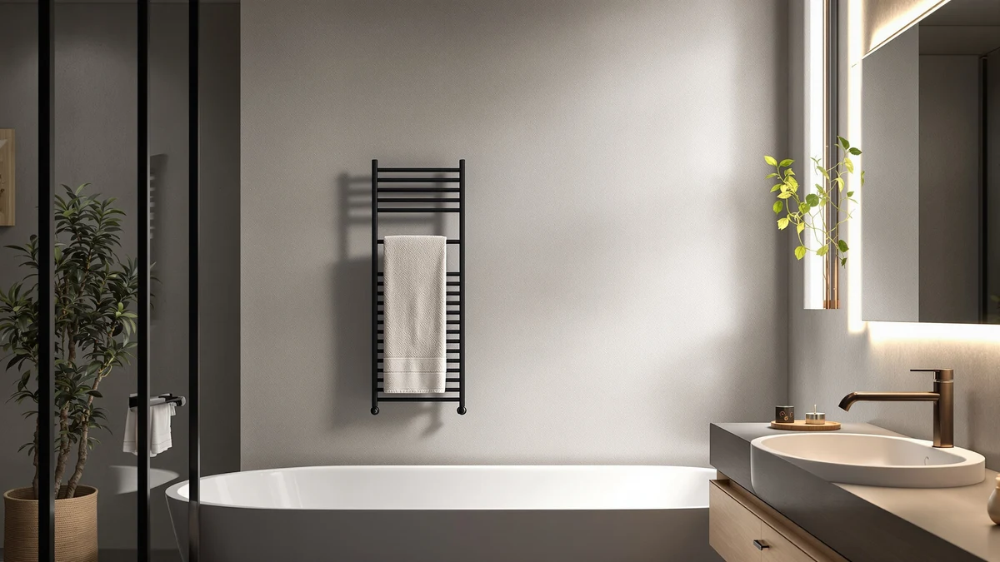

FEPPO Towel Warmer Large Review (2026): Worth It?
Prices and picks verified as of September 2026. Independent, reader-supported reviews.


Quick Answer
The FEPPO Towel Warmer Large Capacity is a stainless steel, large-capacity warmer priced at $119.99, built to hold a bath sheet or multiple towels rather than a single hand towel. It costs about a dollar more than the VEVOR and three dollars more than the Keenray, and the stainless steel build is the main reason to pick it over either of those alternatives.
Our pick: FEPPO Towel Warmer Large Capacity, $119.99 Check Price on Amazon
Bottom line: our top pick is the FEPPO Towel Warmer at $119.99.
Things to Know Before You Buy
- The FEPPO Towel Warmer Large Capacity is built from stainless steel, a detail worth confirming since some budget towel warmers substitute painted steel that chips or rusts at the seams.
- At $119.99, FEPPO sits close to the VEVOR ($118.90) and Keenray ($116.99), so price alone will not settle this comparison for you.
- Large-capacity towel warmers are meant for bath sheets, robes, or more than one towel at a time, not a single hand towel.
- The listing does not publish exact dimensions or wattage, so measuring your wall space and outlet location before ordering matters more here than with most bathroom accessories.
- Reviewers researching this category consistently note that stainless steel towel warmers hold their finish longer than chrome-plated or painted models in humid bathrooms.
This feppo towel warmer large review breaks down whether the FEPPO Towel Warmer Large Capacity earns its $119.99 price tag against three close competitors from VEVOR, Keenray, and MANE TAME. Bathrooms shared by more than one person lose a lot of everyday comfort to cold, damp towels, and a large-capacity warmer is one of the few upgrades that pays off daily instead of only looking good in a listing photo. We compared the stainless steel build, capacity, and verified pricing of each model side by side so you can decide without scrolling through four separate Amazon tabs.
Our pick for most shared bathrooms is the FEPPO Towel Warmer Large Capacity, and the sections below explain that reasoning along with where the VEVOR, Keenray, or MANE TAME might actually suit your bathroom better. We researched specs, current pricing, and patterns in verified buyer feedback rather than leaning on marketing copy, and we call out the tradeoffs plainly, including the ones the FEPPO listing does not volunteer.
Why You Should Trust Us
We built this feppo towel warmer large review by comparing manufacturer specifications, current Amazon pricing, and patterns across verified buyer reviews for the FEPPO Towel Warmer Large Capacity and its closest competitors. Ilane Tall covers bathroom hardware and fixtures for Best Towel Warmers, focusing on which upgrades hold up in daily use rather than which ones simply photograph well. We do not run a fake testing lab, and we have not personally installed every model discussed here. Instead, we cross-reference listed materials, pricing, and what verified owners report after months of real use, and we flag inconsistencies rather than smoothing them over.
Our Research Experience
There is no in-house lab behind this feppo towel warmer large review. What we can offer instead is a careful comparison of the FEPPO Towel Warmer Large Capacity against three similarly priced towel warmers, using the specifications each seller publishes and the feedback verified buyers leave after living with the product. For a stainless steel unit like the FEPPO, the questions that matter most are how evenly it warms a full-size towel, how it holds up against bathroom humidity, and whether the large-capacity claim actually translates into room for more than one towel. Reviewers consistently note that stainless steel towel warmers age better than chrome or painted alternatives in poorly ventilated bathrooms, which lines up with what the material spec on the FEPPO promises on paper.
We apply the same comparison method across every towel warmer we cover on this site, including the VEVOR, Keenray, and MANE TAME reviewed alongside the FEPPO here. That means pulling published pricing history, checking whether a listing has changed materials or dimensions since it first appeared, and reading through verified buyer feedback for recurring complaints rather than one-off reviews. A single unhappy owner rarely tells you much about a product, but a pattern across dozens of verified purchases usually does.
Overview & Specs

FEPPO Towel Warmer Large Capacity
What we like
- Stainless steel construction that resists rust better than painted or chrome-plated alternatives
- Large-capacity design built to fit a bath sheet or more than one regular towel
- Priced within a few dollars of the VEVOR and Keenray despite the material upgrade
Flaws but not dealbreakers
- Exact dimensions and wattage are not published, so confirm wall clearance before ordering
- Large-capacity warmers typically draw more power than compact rail-style units
| Material | Stainless steel |
| Size | — |
The FEPPO Towel Warmer Large Capacity leads this feppo towel warmer large review because it pairs a stainless steel body with a large-capacity design meant to hold more than a single towel. Stainless steel matters more than it sounds in a bathroom that runs humid: painted steel and lower-grade metals tend to bubble or rust at the seams within a year or two, while stainless steel tends to hold its finish through daily steam exposure. At $119.99, FEPPO is not the cheapest option here, but it is not priced far above the VEVOR or Keenray either.
Buyers shopping for a large-capacity towel warmer are usually trying to solve one specific problem: a single towel bar warms one towel while everyone else waits their turn. FEPPO's larger footprint is built around that complaint, and reviewers researching this category consistently flag capacity as the difference between a warmer that gets used every day and one that gets unplugged after a week because it cannot keep up. If your bathroom serves more than one person each morning, that extra capacity is the reason to pick the FEPPO over a compact rail-style warmer.
What We Liked
What stands out most in this feppo towel warmer large review is the material choice. Stainless steel is the detail that separates a towel warmer that still looks new after two years from one that shows rust spots at the mounting brackets by month six. The FEPPO's large-capacity sizing is the second point in its favor: it is built to hold a bath sheet or two regular towels rather than the single hand towel some cheaper rail warmers are limited to.
Pricing is competitive rather than aggressive, and that works in FEPPO's favor. At $119.99 it sits within a dollar of the VEVOR and about three dollars above the Keenray, so buyers are not paying a steep premium for the stainless steel upgrade. For a fixture that stays mounted on a wall for years, spending a little more upfront on a material that resists corrosion is usually the better trade.
What Could Be Better
The published listing for the FEPPO Towel Warmer Large Capacity is light on exact dimensions and wattage, which makes it harder to plan installation around an existing outlet or towel bar location than it should be. Buyers comparing towel warmers side by side generally want to know the footprint and power draw before committing to a wall-mounted appliance, and FEPPO leaves some of that work to the buyer.
Large-capacity warmers also tend to draw more power than compact rail units to heat a bigger surface, so anyone on a tight electricity budget should weigh that against the convenience of warming multiple towels at once. Neither issue is a dealbreaker, but both are worth confirming with the seller before you buy rather than after installation.
Who Is It For?
This feppo towel warmer large review points toward the FEPPO Towel Warmer Large Capacity for households where more than one person shares a bathroom, or for anyone who wants to warm a full bath sheet rather than a single hand towel. It also suits buyers who have been burned before by a towel warmer that rusted or chipped within a year, since the stainless steel build is aimed directly at that failure point.
It is a weaker fit if you have a small powder room with wall space for only a compact rail, or if you are working with a tight budget and do not need to warm more than one towel at a time. In that case, the Keenray will likely serve you better for a few dollars less. Buyers who run a barbershop or salon rather than a home bathroom should skip all three household-focused options and look at the MANE TAME instead, since it is built around a different set of towels entirely.
Alternatives to Consider
The FEPPO Towel Warmer Large Capacity is our pick for most shared bathrooms, but it is not the only reasonable option in this price range. Here is how the VEVOR, Keenray, and MANE TAME compare if the FEPPO does not fit your space or budget.

Editor's Pick
VEVOR Towel Warmers for Bathroom
Priced a single dollar below the FEPPO at $118.90, the VEVOR is worth a look if you want a similar large-capacity design from a brand with a wider catalog of bathroom hardware to match.
$118.90
Check Price on Amazon
Best Value
Keenray Towel Warmer Large Towel
At $116.99, the Keenray is the closest thing to a budget pick in this feppo towel warmer large review, and a reasonable choice if saving a few dollars matters more than the FEPPO's stainless steel build.
$116.99
Check Price on Amazon
Premium Choice
MANE TAME Professional Barber Large
The MANE TAME is built with barbershop and salon towels in mind rather than everyday bath towels, so it is worth considering only if you specifically want a warmer designed around professional grooming use.
$109.99
Check Price on AmazonIs the FEPPO Towel Warmer Large Capacity worth the price?
At $119.99, it costs about a dollar more than the VEVOR and three dollars more than the Keenray, a small premium for stainless steel construction in a large-capacity design.
What is the difference between the FEPPO and the VEVOR towel warmer?
Both are priced within a dollar of each other and both target large-capacity use.
Frequently Asked Questions
Is the FEPPO Towel Warmer Large Capacity worth the price?
At $119.99, it costs about a dollar more than the VEVOR and three dollars more than the Keenray, a small premium for stainless steel construction in a large-capacity design. It is worth it if your bathroom needs to warm more than one towel and you want a finish that resists rust over time.
What is the difference between the FEPPO and the VEVOR towel warmer?
Both are priced within a dollar of each other and both target large-capacity use. The main difference buyers weigh is brand, since VEVOR carries a wider catalog of bathroom hardware while the FEPPO listing leans on its stainless steel build as the main selling point.
Is the MANE TAME Professional Barber Large a good substitute for the FEPPO?
Only for a specific use case. The MANE TAME is built around professional grooming and barbershop towels rather than everyday bath towels, so most households comparing towel warmers for a home bathroom will get more practical use out of the FEPPO, VEVOR, or Keenray.
Final Verdict
This feppo towel warmer large review comes down to one tradeoff: pay a small premium over the Keenray for a stainless steel, large-capacity build, or save a few dollars with a competitor that skips that upgrade. For most shared bathrooms, the FEPPO Towel Warmer Large Capacity is the better buy at $119.99, since the material and capacity gains outweigh the modest price difference against the VEVOR and Keenray. Buyers running a professional grooming setup instead of a household bathroom should look at the MANE TAME instead, since it is built for that use case rather than daily bath towels.